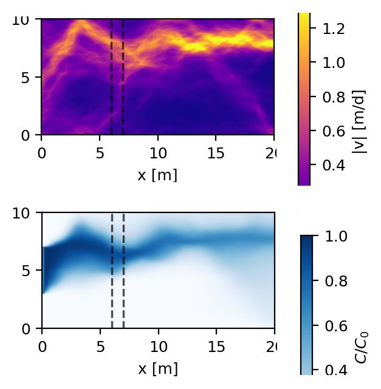
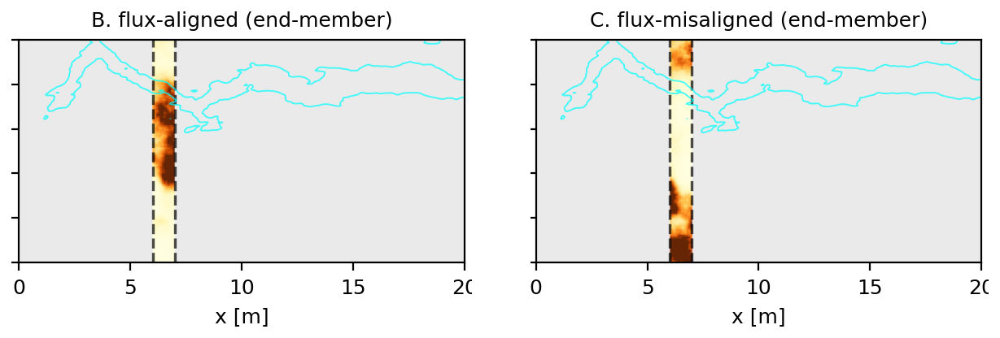
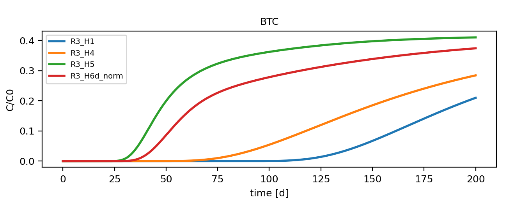

Zijie Zheng
Environmental Engineering · Contaminant Transport · Groundwater Remediation · Numerical Simulation
Ph.D. candidate in Environmental Engineering focused on PFAS transport, reactive transport modeling, and groundwater remediation. My research combines experiments and numerical modeling to study contaminant transport in porous media. I am interested in physical modeling, numerical methods, and practical remediation applications.
Advised by Charles Werth and Marc Hesse · The University of Texas at Austin

Research Highlights

Mass transfer, not capacity, controls PFAS breakthrough
Colloidal activated carbon (CAC) is injected into an aquifer to form a sorptive barrier across a PFAS plume. Sizing that barrier from equilibrium capacity assumes PFAS reaches the carbon as fast as water carries it past — but at the pore scale, PFAS must first transfer from the flow paths onto CAC surfaces, and that step takes time. When it is slow relative to the residence time in the barrier, PFAS breaks through while most of the sorption capacity is still unused.

Which regime a system falls in collapses onto a single Damköhler number, the ratio of the advective residence time tA to the mass-transfer time tR. The dashed Da = 1 line splits kinetic control (upper left) from local equilibrium (lower right). Column experiments sit well onto the kinetic side (a), so lab data cannot be extrapolated with an equilibrium model. At field scale (b) natural-gradient flow falls near equilibrium, but pumping pulls the same barrier back into kinetic control — which is exactly where equilibrium sizing overpredicts barrier lifetime.

Where the carbon sits matters more than how much
In a heterogeneous aquifer the plume never arrives as a uniform front. Hydraulic conductivity organises the flow into fast channels (top), and PFOA follows them (bottom) — reaching the barrier, marked by the dashed lines, concentrated in a few narrow paths rather than spread across its whole face.

So placement is what counts. Both barriers below hold the same total mass of CAC. On the left it lies in the fast-flow paths (cyan contour); on the right it sits away from them and leaves a high-flux window uncovered.

That window controls performance: the same carbon mass spans roughly a threefold range in breakthrough time, misaligned (green) failing first and uniform (blue) last. Adding more carbon delays breakthrough but does not close the window — only moving capacity into it does.